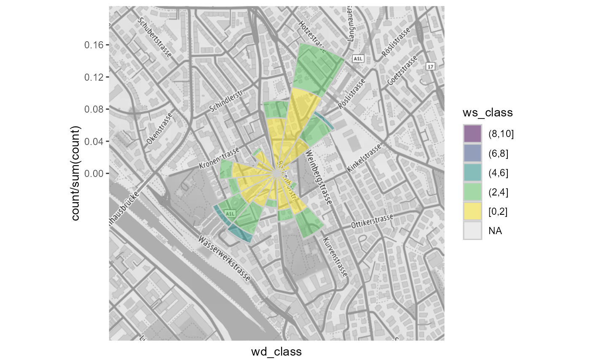

quick and really dirty implementation of a raster rendered on the whole extend of the panel.
geom_polar_raster(raster, interpolate = TRUE, ...)raster data to plot
interpolate Raster. see grid::rasterGrob()
unused at the moment
ggplot2 layer
require(ggplot2)
# prepare map as raster
bbox <- tibble::tibble(x = c(2683141 - 500, 2683141 + 500), y = c(1249040 - 500, 1249040 + 500))
bbox <- rOstluft::transform_LV95_to_WSG84(bbox)
#> Warning: Discarded datum CH1903+ in Proj4 definition
bbox <- c(left = bbox$lon[1], right = bbox$lon[2], bottom = bbox$lat[1], top = bbox$lat[2])
raster_map <- ggmap::get_stamenmap(bbox, zoom = 16, maptype = "terrain",
source = "stamen", color = "bw")
# prepare data
fn <- rOstluft.data::f("Zch_Stampfenbachstrasse_2010-2014.csv")
data <- rOstluft::read_airmo_csv(fn)
wide <- rOstluft::rolf_to_openair(data)
winkel_sector <- 22.5
wide <- dplyr::mutate(
wide,
wd_shifted = .data$wd - winkel_sector / 2,
wd_class = ggplot2::cut_width(.data$wd_shifted, 22.5),
ws_class = forcats::fct_rev(ggplot2::cut_interval(.data$ws, length = 2))
)
ggplot(wide, aes(x = wd_class, fill = ws_class, y = stat(count / sum(count)))) +
# insert raster as background
geom_polar_raster(raster_map) +
# add plot
geom_bar(width=1, colour="grey80", size=0.5, alpha = 0.5, show.legend = TRUE, na.rm = TRUE) +
scale_x_discrete(drop = FALSE) +
scale_fill_viridis_d(direction = 1) +
coord_polar(start = -((winkel_sector/2)/360) * 2*pi) +
theme(
axis.text.x = ggplot2::element_blank()
)
